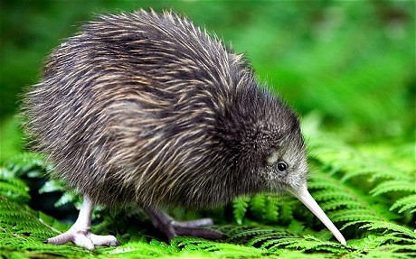

Los kiwis (Apteryx, del gr. «sin alas») constituyen un pequeño género de aves paleognatas, el único de su familia (Apterygidae) que a su vez es el único de su orden (Apterygiformes). Este género está compuesto por cinco especies endémicas de Nueva Zelanda.
Son aves no voladoras pequeñas, aproximadamente del tamaño de una gallina. Antes de la llegada del hombre alrededor del año 1300, en Nueva Zelanda los únicos mamíferos que había eran murciélagos, y los nichos ecológicos que en otras partes del mundo eran ocupados por animales tan diversos como caballos, lobos y ratones fueron utilizados en Nueva Zelanda por aves (y en menor proporción por ciertas especies de reptiles). El término kiwi es maorí, idioma del pueblo homónimo de linaje malayopolinesio que fueron los primeros en colonizar Nueva Zelanda.
Este es el párrafo de la sección